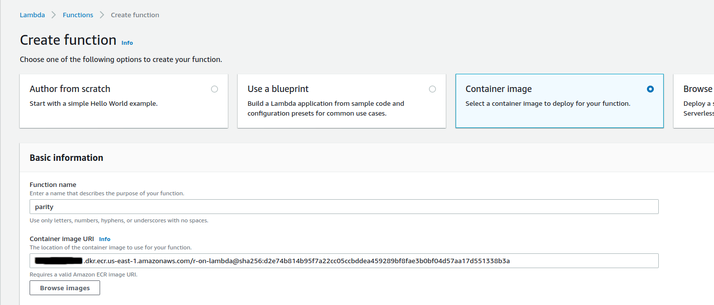
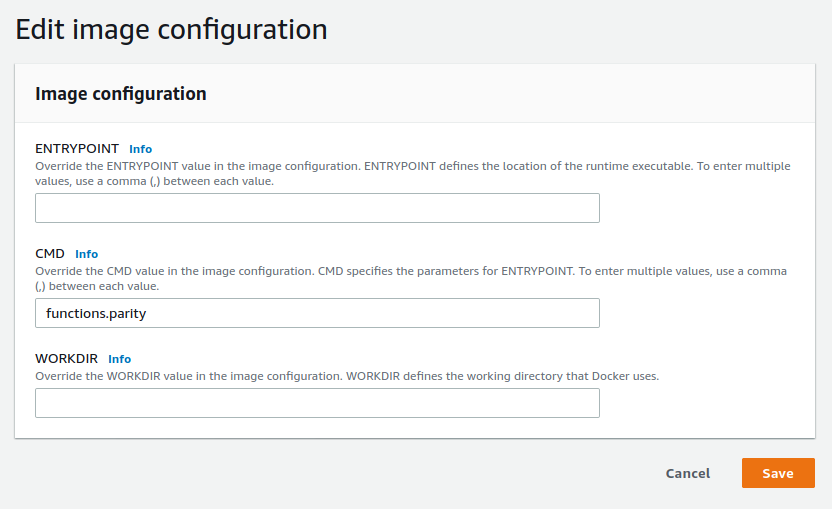
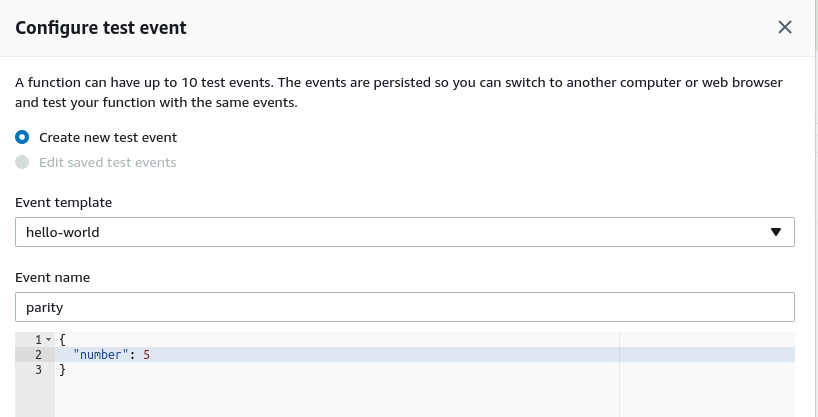
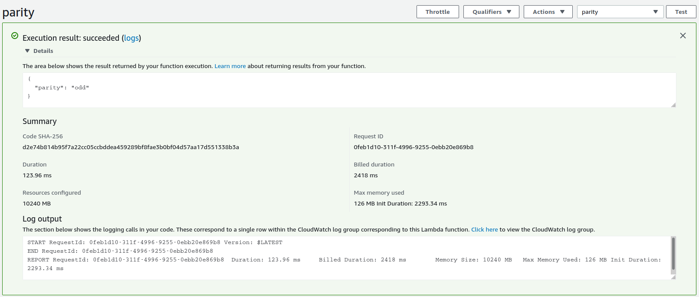

AWS has announced support for container images for their serverless computing platform Lambda. AWS doesn’t provide an R runtime for Lambda, and this was the excuse I needed to finally try to make one.
An R runtime means that I can take advantage of AWS Lambda to put my R functions in the cloud. I don’t have to worry about provisioning servers or spinning up containers — the function itself is the star. And from the perspective of the service calling Lambda, it doesn’t matter what language that function is written in.
Also, someone told me that you can’t use R on Lambda, and I took that personally.
“Container support” is potentially confusing here. To clarify, we can’t take any container and expect Lambda to work with it. The container needs to provide a Lambda runtime, or use one of the available runtimes, in order to have Lambda communicate with the functions. Runtimes are provided for a handful of languages, but not for R.
I’m not the first person to put an R function on Lambda. Previous attempts used Lambda layers. But with container support I can disregard that layer stuff and use Dockerfiles, which is a concept I already have some experience with. And by writing the runtime in R itself I can share a single R session between subsequent requests, cutting down on execution time.
My goal here is to host a function written entirely in R — in this case, a simple parity function that determines if an integer is odd or even. I stick this in a container, along with a Lambda runtime written entirely in R, and then I’m able to invoke the function on AWS.
I’ll talk through the process below, but if you’re the kind of person who likes to read the last page of a book first then you can take a look at my git repository.
AWS provides some documentation for creating a custom runtime, and it’s pretty good. The rough idea is that the Lambda event which initiates the function invocation sits at a HTTP endpoint. My R runtime needs to constantly query that endpoint. The eventual response has a body that contains the arguments that my R function needs. The R runtime has to run the function with those arguments and then send the results to a specific HTTP endpoint. Afterwards it checks the event endpoint again.
I’ll need the httr package for sending requests to HTTP endpoints, and the jsonlite package to convert the response body from a JSON to an R list, and the function result from an R list to a JSON. It’s all JSONS. That’s why I build my parity function to return a list. The jsonlite package will take a result like list(parity = "even") and turn it into {"parity": "even"} which non-R services can understand.
parity <- function(number) {
list(parity = if (as.integer(number) %% 2 == 0) "even" else "odd")
}My code does the following:
AWS Lambda sets a few environment variables that my code needs to be able to capture. The first is LAMBDA_TASK_ROOT, which is the path to the working directory for the function. In the Dockerfile, all of the R code will be copied here, where the runtime will look for it.
There’s also the _HANDLER, which is a string of the form “file.function”. I put the code for my parity function in a file called functions.R, so my handler will be “functions.parity”; I make my runtime automatically append the “.R” extension. I can set the handler either as the CMD of the Dockerfile or through the AWS Lambda console (which takes precedence). Afterwards, it is made available as an environment variable to my runtime.
The AWS_LAMBDA_RUNTIME_API is used to piece together the different HTTP endpoints needed to communicate with Lambda:
Every event that comes through has a request ID header, named “lambda-runtime-aws-request-id”1. This uniquely identifies the event, and is used to construct the event-specific HTTP endpoints.
Finally there’s also a “lambda-runtime-trace-id” header. The AWS guide suggest setting this as the value of the _X_AMZN_TRACE_ID environment ID. Curiously, that seems to be the only action required. I was expecting to have to pass this header on in the response, but apparently not. It’s used as part of AWS’s X-Ray SDK.
The body of the event, which is the response from the next invocation endpoint, contains the arguments that my function needs. If the body is empty then there are no arguments and my function should accept no arguments in this case. I interpret the body as an empty list. Otherwise, I use the jsonlite package to parse the JSON body into an R list. This is a particularly sensitive area of the runtime; JSON parsing is a fragile process.
unparsed_content <- httr::content(event, "text", encoding = "UTF-8")
event_content <- if (unparsed_content == "") {
list()
} else {
jsonlite::fromJSON(unparsed_content)
}From this point I can call the function with this list of arguments:
do.call(function_name, event_content)The runtime sends the result to the appropriate HTTP endpoint and listens for the next event. And that’s the runtime done.
The Dockerfile starts with the AWS base image for Lambda2 that contains the bits and pieces needed to host the function. I install R as if it were a CentOS image, and remove the installer afterwards to save a little space. There are some path issues here: I need to append the location of the R binaries to the system PATH, and manually specify the CRAN repository when installing R packages.
In order to run my runtime, I need to provide the container with a bootstrap. This bootstrap isn’t particularly complicated: it’s an executable script that changes the working directory to the value of the LAMBDA_TASK_ROOT environment variable and runs the runtime.R file:
#!/bin/sh
cd $LAMBDA_TASK_ROOT
Rscript runtime.RI think such a small and simple script doesn’t need to be a file, so I hardcode it within the Dockerfile itself. Here’s the Dockerfile I end up with:
FROM public.ecr.aws/lambda/provided
ENV R_VERSION=4.0.3
RUN yum -y install wget
RUN yum -y install https://dl.fedoraproject.org/pub/epel/epel-release-latest-7.noarch.rpm \
&& wget https://cdn.rstudio.com/r/centos-7/pkgs/R-${R_VERSION}-1-1.x86_64.rpm \
&& yum -y install R-${R_VERSION}-1-1.x86_64.rpm \
&& rm R-${R_VERSION}-1-1.x86_64.rpm
ENV PATH="${PATH}:/opt/R/${R_VERSION}/bin/"
# System requirements for R packages
RUN yum -y install openssl-devel
RUN Rscript -e "install.packages(c('httr', 'jsonlite', 'logger'), repos = 'https://cloud.r-project.org/')"
COPY runtime.R functions.R ${LAMBDA_TASK_ROOT}/
RUN chmod 755 -R ${LAMBDA_TASK_ROOT}/
RUN printf '#!/bin/sh\ncd $LAMBDA_TASK_ROOT\nRscript runtime.R' > /var/runtime/bootstrap \
&& chmod +x /var/runtime/bootstrapI haven’t set any entrypoint or command for this container. The default entrypoint for the parent image is a shell script for AWS Lambda, and I don’t want to interfere with that. The command is the handler for the function. I could hardcode that here as with CMD ["functions.parity"], but instead I configure it later within the AWS Lambda management console.
The Lambda base image lets me test my function locally by running the container and then querying a HTTP endpoint. I start by navigating to the project directory and building the image:
docker build -t mdneuzerling/r-on-lambda .I run the image by providing it with the handler as the command. Recall that I want to use the parity function from the functions.R file:
docker run -p 9000:8080 mdneuzerling/r-on-lambda "functions.parity"In a separate shell I query the endpoint:
curl -X POST "http://localhost:9000/2015-03-31/functions/function/invocations" \
-d '{"number": 5}'I receive the response {"parity":"odd"} which — for the number 5 — is correct3. The STDOUT of the main window contains the log entries. There are some messages and warnings here that I choose to ignore:
time="2020-12-05T21:56:04.914" level=info msg="exec '/var/runtime/bootstrap' (cwd=/var/task, handler=)"
time="2020-12-05T21:56:46.953" level=info msg="extensionsDisabledByLayer(/opt/disable-extensions-jwigqn8j) -> stat /opt/disable-extensions-jwigqn8j: no such file or directory"
time="2020-12-05T21:56:46.953" level=warning msg="Cannot list external agents" error="open /opt/extensions: no such file or directory"
START RequestId: ff9ed881-8874-48f6-b67f-6b271e9afd3c Version: $LATEST
logger: As the "glue" R package is not installed, using "sprintf" as the default log message formatter instead of "glue".
INFO [2020-12-05 21:56:47] Handler found: functions.parity
INFO [2020-12-05 21:56:47] Using function parity from functions.R
INFO [2020-12-05 21:56:47] Querying for events
END RequestId: ff9ed881-8874-48f6-b67f-6b271e9afd3c
REPORT RequestId: ff9ed881-8874-48f6-b67f-6b271e9afd3c Init Duration: 0.43 ms Duration: 332.66 ms Billed Duration: 400 ms Memory Size: 3008 MB Max Memory Used: 3008 MBThe container image needs to be available on AWS in order for Lambda to use it. That is, the image needs to be hosted on AWS’s Elastic Container Registry. The AWS announcement of container support provides some good instructions for pushing an image, but I’ll briefly cover it here.
Container support isn’t available for every region yet, so I switch to the us-east-1 region using the AWS CLI:
aws configure set region us-east-1Then, following the instructions from the announcement, I create a repository for my image.
aws ecr create-repository --repository-name r-on-lambda --image-scanning-configuration scanOnPush=trueThis command gives me information about the repository, including a URI. In my case, the URI takes on the form “{AWS account number}.dkr.ecr.us-east-1.amazonaws.com”. The next step involves re-tagging my image to include this URI, and then pushing the image to ECR:
docker tag mdneuzerling/r-on-lambda:latest {URI}/r-on-lambda:latest
aws ecr get-login-password | docker login --username AWS --password-stdin {URI}
docker push {URI}/r-on-lambda:latestFrom the AWS Management Console I change my region to “us-east-1”. On the Lambda page I create a new function, and I see the new option to use a container image. I select the container I just uploaded and click “Create Function”.

It takes a few seconds before I see the function configuration page. I need to make one change here. I didn’t set a CMD in my Dockerfile, so I need to edit the image configuration to specify the handler. I want to use the parity function from the functions.R source file, so I override the CMD to “functions.parity”.

Now I’ll configure a test to check that my function is working. The “Test” button, towards the top-right of the console, prompts me define a test JSON payload:

Afterwards, I click the “Test” button again and see the results:

The function is working! As a final check I’ll invoke the function through the AWS CLI:
aws lambda invoke --function-name parity \
--invocation-type RequestResponse --payload '{"number": 8}' \
/tmp/response.jsonAnd, sure enough, the response.json file contains the expected {"parity":"even"} result.
The performance isn’t fantastic. Each invocation takes about 120ms. The initalisation time is 7 seconds, reduced to 2.3 seconds if I increase the available memory to the maximum of 10GB. This seems slow to me, but then again I don’t have a good baseline for container-based Lambda functions. The initialisation penalty is only incurred if the function hasn’t been called for a while — for requests in quick succession the image is kept alive.
Thank you to @berkorbay for telling me that this invocation command doesn’t work on the latest version of the AWS CLI. They suggested this instead:
aws lambda invoke --function-name parity \
--invocation-type RequestResponse --payload '{"number": 8}' \
/tmp/response.json --cli-binary-format raw-in-base64-outI had a lot of trouble getting this to work, and the main reason for that is that the errors that came from my code were often not the actual errors. I also had no way to step through the code. Logging really helped me with debugging. I’ve had a few people ask me to talk about logging, so I’ll talk through it here.
Logs are records generated as the code runs that are saved to a file or otherwise captured to be stored after the program has finished. I might log the status of my program, the information it receives, or any errors or warnings that it encounters. There are a few packages that support logging and they all tend to follow the same conventions. I’m using the logger package by Gergely Daróczi.
Logging has the potential to generate a lot of information, and a good way to simplify this is to take advantage of log levels. There are many levels, but the five common ones — in increasing order of severity — are: debug, info, warn, error, and fatal. By setting a threshold I can encourage my logger to ignore entries below a certain level. In my runtime I set the threshold to info, but if I’m encountering errors and I want more detail than I can lower this to debug so that all of the debug-level log entries come through.
Logs can be stored to files or simply printed to STDOUT. AWS’s logging service, Cloudwatch, will capture the STDOUT logs. I didn’t have to do anything to set this up, so I assume that it’s automatic.
I’ll give an example. I was having some trouble sourcing the file, and I wanted to make sure that my code was interpreting and splitting the handler. I used some info-level log entries to record the handler that the code discovers, and how it’s split. If I’m debugging, I want to be more verbose about how I’m treating this information, so I also record that I’m about to check if the source file exists:
handler <- Sys.getenv("_HANDLER")
log_info("Handler found:", handler)
handler_split <- strsplit(handler, ".", fixed = TRUE)[[1]]
file_name <- paste0(handler_split[1], ".R")
function_name <- handler_split[2]
log_info("Using function", function_name, "from", file_name)
log_debug("Checking if", file_name, "exists")
# ...It’s easy to log too much, or log useless information. Good logging takes into account how the log entries might be used. In my case, the logging that AWS Lambda does automatically is usually sufficient, so I introduce minimal information with my log entries. But since I can’t step through the runtime, I rely on the debug-level logging to resolve bugs.
A smarter option here might even be to use an environment variable to configure the log threshold, since that way I wouldn’t need to rebuild the container image to debug.
futureI had a quick go at trying to introduce asynchronous programming using the future package. I didn’t have much luck, because a new event wasn’t available at the next endpoint before the current request was submitted. I suspect that there are some complexities to getting Lambda to run asynchronously with which I’m just not familiar.
But on the whole, I’m pretty happy with this! My runtime is generic enough that — apart from the usual complexities of managing R dependencies — I don’t need to worry about changing it for each function. And managing R dependencies with Dockerfiles is a well-studied problem.
devtools::session_info()## ─ Session info ───────────────────────────────────────────────────────────────
## setting value
## version R version 4.1.0 (2021-05-18)
## os macOS Big Sur 11.3
## system aarch64, darwin20
## ui X11
## language (EN)
## collate en_AU.UTF-8
## ctype en_AU.UTF-8
## tz Australia/Melbourne
## date 2021-05-30
##
## ─ Packages ───────────────────────────────────────────────────────────────────
## package * version date lib source
## blogdown 1.3 2021-04-14 [1] CRAN (R 4.1.0)
## bookdown 0.22 2021-04-22 [1] CRAN (R 4.1.0)
## bslib 0.2.5.1 2021-05-18 [1] CRAN (R 4.1.0)
## cachem 1.0.4 2021-02-13 [1] CRAN (R 4.1.0)
## callr 3.7.0 2021-04-20 [1] CRAN (R 4.1.0)
## cli 2.5.0 2021-04-26 [1] CRAN (R 4.1.0)
## crayon 1.4.1 2021-02-08 [1] CRAN (R 4.1.0)
## desc 1.3.0 2021-03-05 [1] CRAN (R 4.1.0)
## devtools 2.4.0 2021-04-07 [1] CRAN (R 4.1.0)
## digest 0.6.27 2020-10-24 [1] CRAN (R 4.1.0)
## ellipsis 0.3.2 2021-04-29 [1] CRAN (R 4.1.0)
## evaluate 0.14 2019-05-28 [1] CRAN (R 4.1.0)
## fastmap 1.1.0 2021-01-25 [1] CRAN (R 4.1.0)
## fs 1.5.0 2020-07-31 [1] CRAN (R 4.1.0)
## glue 1.4.2 2020-08-27 [1] CRAN (R 4.1.0)
## htmltools 0.5.1.1 2021-01-22 [1] CRAN (R 4.1.0)
## jquerylib 0.1.4 2021-04-26 [1] CRAN (R 4.1.0)
## jsonlite 1.7.2 2020-12-09 [1] CRAN (R 4.1.0)
## knitr 1.33 2021-04-24 [1] CRAN (R 4.1.0)
## lifecycle 1.0.0 2021-02-15 [1] CRAN (R 4.1.0)
## magrittr 2.0.1 2020-11-17 [1] CRAN (R 4.1.0)
## memoise 2.0.0 2021-01-26 [1] CRAN (R 4.1.0)
## pkgbuild 1.2.0 2020-12-15 [1] CRAN (R 4.1.0)
## pkgload 1.2.1 2021-04-06 [1] CRAN (R 4.1.0)
## prettyunits 1.1.1 2020-01-24 [1] CRAN (R 4.1.0)
## processx 3.5.2 2021-04-30 [1] CRAN (R 4.1.0)
## ps 1.6.0 2021-02-28 [1] CRAN (R 4.1.0)
## purrr 0.3.4 2020-04-17 [1] CRAN (R 4.1.0)
## R6 2.5.0 2020-10-28 [1] CRAN (R 4.1.0)
## remotes 2.3.0 2021-04-01 [1] CRAN (R 4.1.0)
## rlang 0.4.11 2021-04-30 [1] CRAN (R 4.1.0)
## rmarkdown 2.8 2021-05-07 [1] CRAN (R 4.1.0)
## rprojroot 2.0.2 2020-11-15 [1] CRAN (R 4.1.0)
## sass 0.4.0 2021-05-12 [1] CRAN (R 4.1.0)
## sessioninfo 1.1.1 2018-11-05 [1] CRAN (R 4.1.0)
## stringi 1.6.1 2021-05-10 [1] CRAN (R 4.1.0)
## stringr 1.4.0 2019-02-10 [1] CRAN (R 4.1.0)
## testthat 3.0.2 2021-02-14 [1] CRAN (R 4.1.0)
## usethis 2.0.1 2021-02-10 [1] CRAN (R 4.1.0)
## withr 2.4.2 2021-04-18 [1] CRAN (R 4.1.0)
## xfun 0.22 2021-03-11 [1] CRAN (R 4.1.0)
## yaml 2.2.1 2020-02-01 [1] CRAN (R 4.1.0)
##
## [1] /Library/Frameworks/R.framework/Versions/4.1-arm64/Resources/library